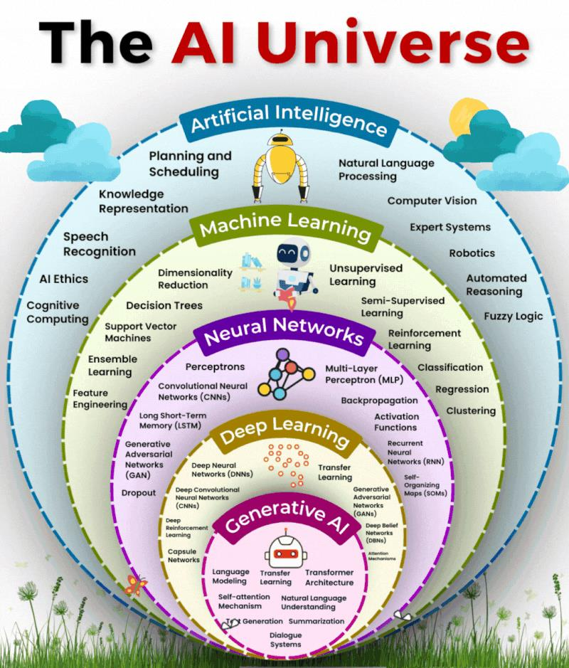
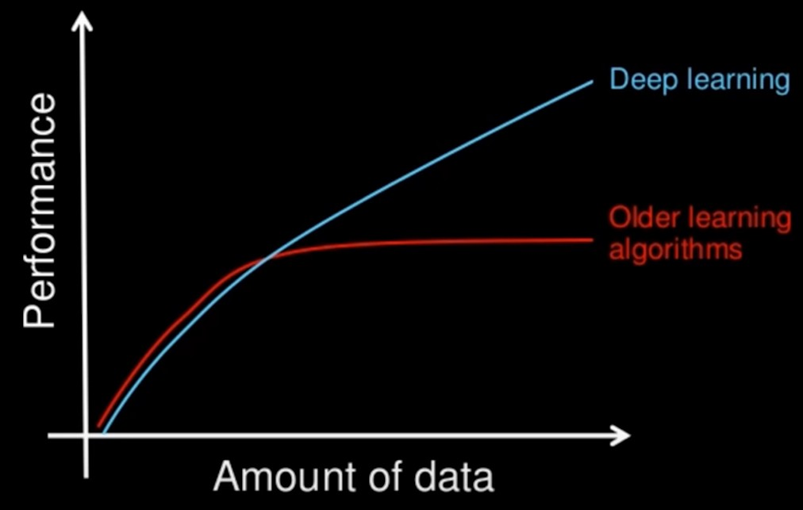

THE BIG PICTURE · WEEK 04
本周知识导图 Weekly knowledge map
先看中心问题，再按编号学习；点击分支标题进入讲解。
模型怎样学习并接受可靠评价？How does a model learn and generalize?
- 先问预测什么Learning tasks
- classification / regression
- supervised / unsupervised / reinforcement
- 认识输入与目标Samples · features · target
- 每行是 sample；X 是 features
- y 是 target；AI ⊃ ML ⊃ DL
- 准备可靠的数据Split & preprocess
- train / validation / test · K-fold
- scaling · imbalance · data leakage
- 按机制选择模型Supervised algorithms
- linear / logistic · tree / forest
- Naïve Bayes · KNN · SVM
- 读懂统一代码流程Scikit-learn workflow
- DataFrame → X, y → train_test_split
- model.fit → model.predict
- 判断表现与泛化Evaluation
- MAE / MSE / RMSE / R²
- confusion matrix · accuracy / P / R / F1
学习顺序 / Order确定任务 → 认识数据 → 划分与预处理 → 选择算法 → fit / predict → 评价
记忆线索：先判断 target 类型，再选算法与指标；test data 应保持未见。
英文表达 / English frameThis is a ___ task because the target is ___. I would evaluate it using ___.
依据本周现有课件讲解整理的学习导航；分支顺序用于复习，不代表官方题量或分值。 A study structure, not an official exam weighting.
知识点概括 / Knowledge overview
本周先区分 machine learning 和 deep learning，再学习训练/测试数据、交叉验证和三类学习。重点是监督学习算法及评价指标，最后能根据任务选择合适算法。
Learn how models use data, how train/test evaluation works, and how supervised algorithms differ.
学习路径 / Learning path
AI · ML · DL
sample · feature · target
train · validation · test
prepare → fit → predict
regression · tree · Bayes · KNN · SVM
metrics · overfit · leakage
| 课件参考 | 由浅入深的主线 | 学习结果 |
|---|---|---|
Week 4-1_ Intro to ML.md | 概念关系 → 数据切分 → supervised algorithms → evaluation。 | 能把场景转成 X/y，选择模型并解释 metric。 |
| 课件数据案例 | salary、car purchase、kyphosis、play-tennis、iris、cat/dog。 | 按 target 类型和模型机制比较算法，而不是死记名称。 |
| 本页补充 | 现代 Scikit-learn 导入、正确 iloc、完整 fit/predict 流程。 | 修正课件旧 API，同时保留原教学意图。 |
1. ML 与 Deep Learning / Concepts
Machine learning 使用 statistical methods，让机器从 experience 中自动改进。Deep learning 是 ML 的一种，受 neurons 和 artificial neural networks 启发。课件强调 deep learning 通常更依赖数据和高性能硬件。
features + labels
fit a model
measure accuracy
adjust method
2. 课件图补充：AI、ML 与 Deep Learning 的关系

Subset relationship
AI 是较大的领域；machine learning 是让系统从数据改善表现的方法；deep learning 是使用多层 neural networks 的 ML 子类。不能把三个词当同义词。
Deep learning is a subset of machine learning, and machine learning is part of the broader field of AI.

Data and performance
课件图表示传统算法的性能可能较早趋于平台，而 deep learning 往往能从更多数据继续获益；这不是“数据越多必然无限变好”，仍取决于质量、模型和任务。
Deep models often benefit from larger datasets, but data quality and model suitability still matter.
Scikit-learn task map
Classification 预测类别；regression 预测连续数值；clustering 在无 label 时自动分组；dimensionality reduction 减少变量；pre-processing 做 scaling、normalisation、feature extraction。
Feature 与 target
X 保存输入 features；y 保存 target/label。每一 row 通常是 sample，每一 column 通常是 feature。训练时不能把答案列留在 X 中。
3. 三类学习 / Learning types
| Type | Data | Goal and examples |
|---|---|---|
| Supervised | labelled data | learn features → known target；classification、regression；linear/logistic regression、tree、forest、Bayes、KNN、SVM。 |
| Unsupervised | unlabelled data | discover patterns/groups；K-means、Apriori。 |
| Reinforcement | agent + environment | actions receive rewards/errors；Q-learning、SARSA。 |
4. 数据划分与过拟合 / Splitting and overfitting
Training set 用来训练模型；test set 用来评估模型在未见数据上的表现。课件常见比例是 80% training、20% test。Serial split 依次切分；random split 随机抽取。
from sklearn.model_selection import train_test_split
X_train, X_test, y_train, y_test = train_test_split(
X, y, test_size=0.2, random_state=0
)Data imbalance
若某一类别几乎占全部训练数据，模型可能只学会预测多数类别。
Overfitting
模型过度适应训练数据或不平衡，遇到新样本表现差。
K-fold cross validation
把数据分为 k 份，轮流用一份 validation、其余训练，最后平均准确率。
“The training set fits the model. The test set estimates generalisation performance.”
5. Scikit-learn 与监督算法 / Supervised algorithms
Scikit-learn 是用于 data mining 和 data analysis 的 Python toolkit，built on NumPy、SciPy 和 Matplotlib。
| Algorithm | What it predicts | What to remember |
|---|---|---|
| Linear regression | 连续数值 | best fit line y=mx+c；minimise errors；R²、MAE、MSE、RMSE。 |
| Logistic regression | 二分类 | sigmoid curve；output 0–1；threshold 常用 0.5；需要 feature scaling in the workflow。 |
| Decision tree | 分类/决策 | 条件分支清晰可解释；可能 overfit。 |
| Random forest | 分类/预测 | 多棵树 + bagging；通常更稳定，降低单棵树过拟合。 |
| Naïve Bayes | 分类 | Bayes theorem；prior、likelihood、posterior。 |
| KNN | 分类 | 按距离找 k 个近邻；选择 k；对 scaling 敏感。 |
| SVM | 分类/回归 | hyperplane、maximum margin、kernel。 |
6. 监督学习的统一代码流程
from sklearn.model_selection import train_test_split
X_train, X_test, y_train, y_test = train_test_split(
X, y, test_size=0.2, random_state=42, stratify=y
)
model.fit(X_train, y_train)
y_pred = model.predict(X_test)- Define the task：target 连续是 regression，categorical 是 classification。
- Prepare X and y：处理 missing values、类别编码与必要的 feature selection。
- Split：test data 必须保持 unseen；分类可用
stratify=y保持类别比例。 - Preprocess：需要距离/尺度的模型通常 scaling；只在 training set 上
fitscaler，再 transform test，避免 data leakage。 - Fit and predict：
fit学参数，predict对未见样本输出预测。 - Evaluate：regression 用 MAE/MSE/RMSE/R²；classification 用 confusion matrix、accuracy、precision、recall、F1。
sklearn.model_selection 导入 train_test_split；不要使用已移除的 sklearn.cross_validation。切分 DataFrame 时，应使用正确的列选择，不要用错误的 iloc 范围把 target 混入 features。7. Pandas 到 Scikit-learn：完整基础流程 / Code workflow
1. 读入数据并理解 df
import pandas as pd
df = pd.DataFrame({
"hours": [1, 2, 3, 4],
"passed": [0, 0, 1, 1]
})
print(df.shape)
print(df.columns.tolist())
X = df.iloc[:, :-1]
y = df.iloc[:, -1]
print(X.shape)
print(y.tolist())(4, 2)
['hours', 'passed']
(4, 1)
[0, 0, 1, 1]df 是 DataFrame。每一行是 sample；hours 是 feature；passed 是 target。iloc[:, :-1] 取所有行、除最后一列外的所有列；iloc[:, -1] 取最后一列。
2. 正确切分 train/test
按顺序切分
cut = int(len(df) * 0.8)
train = df.iloc[:cut, :]
test = df.iloc[cut:, :]
print(train.shape)
print(test.shape)(3, 2)
(1, 2)课件截图展示 serial split 的思想，但原切片写法会漏行或索引错误。正确边界是训练集到 cut 之前，测试集从 cut 开始。
随机切分
from sklearn.model_selection import train_test_split
X_train, X_test, y_train, y_test = train_test_split(
X, y,
test_size=0.25,
random_state=0
)
print(X_train.shape, X_test.shape)(3, 1) (1, 1)test_size=0.25 留 25% 作 test；random_state=0 固定随机过程，使同样代码可复现。现代导入位置是 sklearn.model_selection。
3. fit、predict、evaluate
from sklearn.linear_model import LogisticRegression
from sklearn.metrics import confusion_matrix
model = LogisticRegression()
model.fit(X_train, y_train)
pred = model.predict(X_test)
print(pred)
print(confusion_matrix(y_test, pred))| Call | 用途 | 输出形式 |
|---|---|---|
model.fit(X_train, y_train) | 从 training features 和 labels 学习 parameters。 | 返回 fitted estimator；通常不需要打印。 |
model.predict(X_test) | 对未见过的 rows 生成预测。 | 一维 label array，例如 [0, 1, 1]；实际值取决于数据。 |
confusion_matrix(y_test, pred) | 把真实标签与预测标签交叉计数。 | 二分类通常是 [[TN, FP], [FN, TP]]。 |
8. 算法细节 / Algorithm details
Naïve Bayes
P(H|E)=P(E|H)P(H)/P(E)。Gaussian 适合连续且近似正态；Multinomial 适合计数；Bernoulli 适合 0/1 特征，例如 word present/not present。
KNN
保存 training cases，用相似性或距离给新点分类。k 太小可能对噪声敏感，k 较大可能过度平滑；feature scaling 影响距离。
SVM
用 separating hyperplane 分隔类别，让 margin 尽可能宽。Kernel 可使用 linear、polynomial、RBF 或 sigmoid，把低维关系映射到高维。
9. 七类监督算法：机制、假设和场景
| Algorithm | Core mechanism | Important condition / trap |
|---|---|---|
| Linear regression | 拟合 y=mx+c 或多变量线性关系，使 residual error 小。 | 预测连续 target；outliers 与非线性关系会影响模型。 |
| Logistic regression | 线性组合经过 sigmoid 得到 0–1 probability，再按 threshold 分类。 | 名称有 regression，但用途主要是 classification；通常需要 scaling。 |
| Decision tree | 按 feature 条件递归分裂，叶节点给出预测。 | 可解释但容易 overfit；限制 depth/leaf size 可正则化。 |
| Random forest | 对抽样数据/特征训练多棵树，再投票或平均。 | 通常比单树稳定，解释性较低，仍需 test evaluation。 |
| Naïve Bayes | 用 Bayes theorem 合并 prior 与 likelihood，并假设给定类别后 features 条件独立。 | Gaussian=连续近似正态；Multinomial=counts；Bernoulli=binary features。 |
| KNN | 找与新点最近的 k 个 training cases，以多数类别预测。 | 依赖 distance，必须关注 scaling；k 太小敏感，太大可能过度平滑。 |
| SVM | 寻找最大 margin separating hyperplane；kernel 处理非线性边界。 | 对 scaling 敏感；常见 kernels：linear、polynomial、RBF、sigmoid。 |

KNN 图怎么读
以新 point 为中心扩大邻域，k 决定参与投票的 neighbour 数量。不同 k 可能产生不同类别。

Confusion matrix 图怎么读
先确认哪一轴是真实标签、哪一轴是预测标签，再定位 TP/TN/FP/FN；不要仅凭左上角位置死记。
10. 课件算法案例映射 / Lecture case map
| Course case | Task | Method / lesson |
|---|---|---|
| Salary from years of experience | Continuous prediction | Linear regression；train/test plot、residuals、MAE/MSE/RMSE/R²。 |
| Buy a car from age and estimated salary | Binary classification | Logistic regression；feature scaling、sigmoid、threshold、confusion matrix。 |
| Kyphosis after surgery | Classification | Decision tree vs random forest；比较 overfitting、stability 与 confusion-matrix results。 |
| Play-tennis/weather table | Probabilistic classification | Naïve Bayes；priors × conditional likelihoods，再比较 class scores。 |
| Iris dataset | Multiclass classification | Gaussian Naïve Bayes 示例；rows=samples、columns=features、species=target。 |
| Cat vs dog point | Neighbour-based classification | KNN；不同 k 可能改变 prediction，distance-based models 需要 scaling。 |
| Linearly/non-linearly separable points | Classification boundary | SVM；maximum margin、support vectors、kernel transformation。 |
11. 回归与分类评价 / Evaluation
Regression
MSE = mean((y_test − y_pred)²)
RMSE = √MSE
R² = proportion of variation explained by the fitted model
课件强调误差越接近 0 通常越好；R² 越接近 1 表示拟合越贴近数据。
Confusion matrix
accuracy = (TP + TN) / (P + N)
misclassification = (FP + FN) / (P + N)
precision = TP / (TP + FP)
recall = TP / (TP + FN)
F1 = 2 * precision * recall / (precision + recall)类别不平衡时 accuracy 可能误导。例如多数样本都是 negative，模型把所有样本都预测为 negative，accuracy 仍可能很高，但 positive class 的 recall 为 0。Precision 关注“预测为 positive 的样本有多少正确”；recall 关注“实际 positive 有多少被找出来”。
“Precision measures the correctness of positive predictions, whereas recall measures how many actual positives are found.”
12. 评价指标的选择逻辑
| Metric | Question answered | When useful |
|---|---|---|
| Accuracy | 所有预测中有多少正确？ | 类别较平衡且两类错误成本接近。 |
| Precision | 预测为 positive 的对象中有多少真的 positive？ | False positives 成本高，例如错误报警。 |
| Recall | 所有实际 positive 中找到了多少？ | False negatives 成本高，例如漏诊。 |
| F1 | Precision 与 recall 的 harmonic mean。 | 需要平衡二者、类别不平衡时。 |
| MAE | 平均绝对误差多大？ | 单位直观，对极端误差比 MSE 不敏感。 |
| MSE / RMSE | 平方惩罚后的平均误差；RMSE 回到原单位。 | 需要更强惩罚大误差。 |
| R² | 模型解释了 target 变异的多少？ | 比较回归拟合；不能单独证明模型合理。 |
13. 机器学习剩余正式考点 / Remaining lecture points
| Point | What to know |
|---|---|
| Why ML | ML 用 statistical methods 从 experience 改善 performance，服务于大规模复杂模型；deep learning 使用多层 neural networks，通常更依赖大量数据和高性能硬件。 |
| Serial vs random split | Serial split 按原行顺序切分，可能保留时间/排序偏差；random split 随机取样，random_state 让结果可复现。 |
| Cross validation | K-fold 轮流使用每一 fold 作 validation，其余训练，最后汇总 performance；test set 不应用于反复调参。 |
| Regression uses | 描述变量关系、估计 effects、预测连续 outcome。Best-fit line 使选定 loss（常见 squared errors）尽量小。 |
| Linear formula | y=mx+c；slope m = Σ(x−x̄)(y−ȳ) / Σ(x−x̄)²，intercept c=ȳ−mx̄。 |
| Logistic threshold | Sigmoid 把 score 转为 probability；课件常用 0.5 cutoff，但 threshold 可按错误成本改变。 |
| Misclassification rate | (FP+FN)/(P+N) = 1−accuracy。 |
| Bagging | Random forest 通过对样本/特征引入随机性训练多棵树，再 aggregate predictions，以降低单树 overfitting。 |
Naïve Bayes 手算结构
- 计算 class prior，例如
P(Yes)和P(No)。 - 按类别计算每个 evidence 的 likelihood，例如
P(Rain|Yes)。 - 使用条件独立假设，将同一类别下 likelihoods 与 prior 相乘。
- 比较未归一化 scores；若需要 probability，再除以所有类别 scores 的总和。
某个频率为 0 时，整个乘积会变 0；实际模型常使用 smoothing。课件主要要求理解 prior、likelihood、posterior 和乘法分类流程。
14. Week 4 图片题考点 / Visual-question checklist
| 课件图 | 应该识别 | 可能计算/解释 |
|---|---|---|
| AI–ML–DL 关系图 | ML 是 AI 的 subset，DL 通常是 ML 的 subset；三者不能当同义词。 | 给案例判断属于 rule-based AI、ML 或 deep learning。 |
| Train/test 与 K-fold 图 | 哪部分训练、哪部分验证/测试；每一 fold 轮到一次 validation。 | 解释为什么不能用 test set 反复调参。 |
| Data amount vs performance 曲线 | 传统方法与 deep learning 随数据量增加的表现趋势。 | 说明更多数据何时有帮助，以及 data quality 仍然重要。 |
| Linear/logistic 图 | 连续直线输出 vs sigmoid probability；threshold 把 probability 变成 class。 | 根据 x 读 prediction，解释 slope 或 cutoff。 |
| Decision tree / random forest 图 | 单树的 split path 与多棵树 aggregation。 | 沿条件得到 leaf；解释 random forest 为什么通常更稳定。 |
| KNN 邻居图 | query point、distance、最近 k 个点、majority class。 | 不同 k 下重新计票；说明 scaling 为什么影响邻居。 |
| Confusion matrix | 先确认 positive class 和坐标方向，再定位 TP/TN/FP/FN。 | 计算 accuracy、precision、recall、F1 与 misclassification rate。 |
| SVM margin 图 | decision boundary、margins、support vectors、线性可分性。 | 选择最大 margin boundary，说明 kernel 的作用。 |
15. 可能的考试问法 / Possible exam prompts
- 判断任务属于 classification、regression、clustering 或 reinforcement learning。
- 区分 feature、target、training、validation、test。
- 判断 overfitting、data imbalance、scaling 或 leakage 的描述。
- 把场景匹配到 linear/logistic regression、tree/forest、Bayes、KNN、SVM。
- 根据错误成本选择 accuracy、precision、recall、F1 或 regression metric。
- 解释 train/test split 和 K-fold cross validation。
- 从 confusion matrix 计算 accuracy、misclassification rate、precision、recall、F1。
- 完成一个简单 Bayes posterior/score 计算。
- 比较 decision tree 与 random forest，或 linear 与 logistic regression。
- 解释 KNN 的 k、distance、scaling；解释 SVM 的 margin、support vector、kernel。
16. 英文与自检 / English and check
“Supervised learning uses labelled data and learns a mapping from features to a known target.”
“K-means is unsupervised because it discovers groups without labelled targets.”
“Accuracy may be misleading on an imbalanced dataset, so precision, recall, and F1 should also be considered.”
- 我能解释 training、test、validation 和 cross validation。
- 我能区分 supervised、unsupervised、reinforcement。
- 我能说明七种监督学习算法的关键词。
- 我能写 MAE、MSE、RMSE、R² 和 confusion metrics。
- 我能解释类别不平衡为何影响 accuracy。
- 我能解释 Naïve Bayes、KNN、SVM 的主要假设或机制。
0 / 0 completed